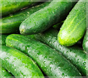

Our products:

- Carrot
- The carrot is a root vegetable, usually orange in colour and is good for the health

- Indian Eggplant
- The raw fruit can have a somewhat bitter but becomes tender when cooked and develops a rich, complex flavor.

- Wheat
- Wheat is a grass widely cultivated for its seed, a cereal grain which is a worldwide staple food.

- Cucumbers
- Cucumber is a widely cultivated plant in the gourd family,The cucumber is originally from South Asia.

- Corn
- Maize has become a staple food in many parts of the world, with total production surpassing that of wheat or rice

- Peppers
- Capsicum is a genus of flowering plants in the nightshade family Solanaceae.ts species are native to the Americas.

- Potatoes
- Potatoes are the world's fourth-largest food crop, following maize (corn), wheat, and rice.

- Strawberry
- The garden strawberry is a widely grown hybrid species of the genus Fragaria, collectively known as the strawberries

- Pumpkins
- A pumpkin is a cultivar of a squash plant that is round, with smooth, slightly ribbed skin and orange color